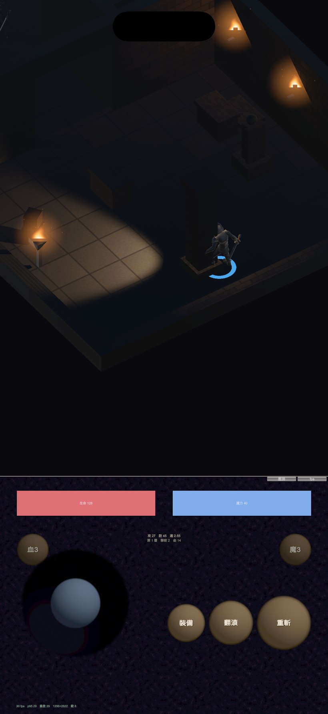
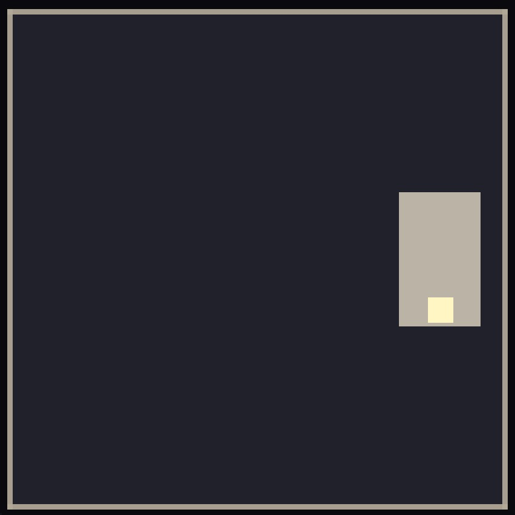
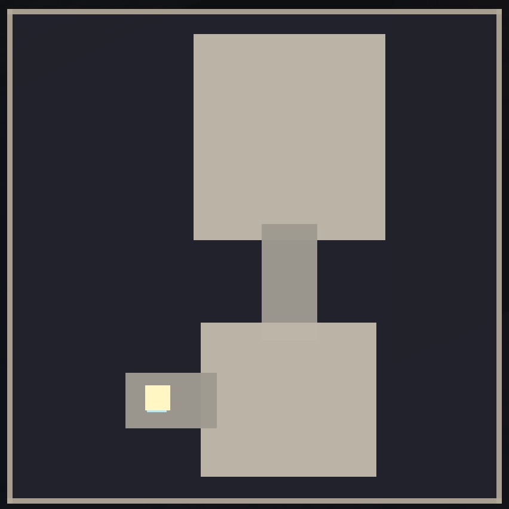
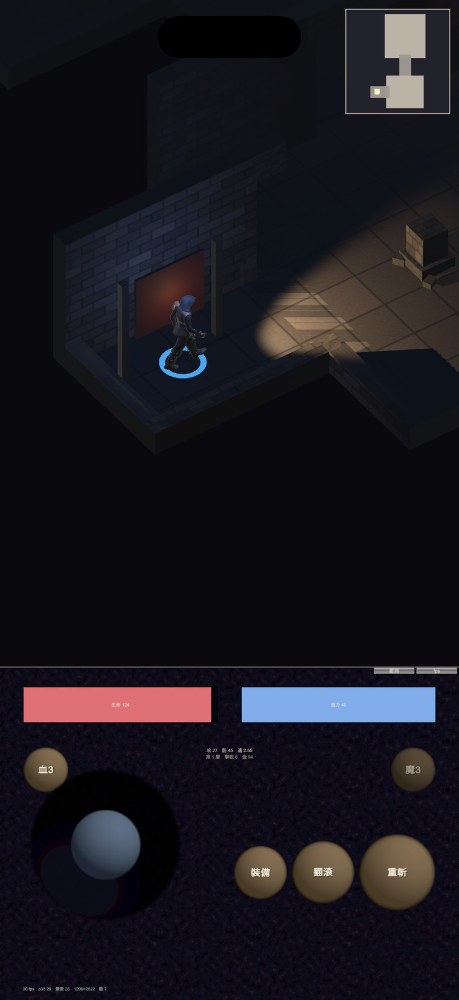

地城迴響 · 視野錐 8 公尺 + 小地圖
視野錐從 13.5 公尺縮到 8 公尺。小地圖只顯示實際踏過的區塊 ——沒去過的地方仍然是未知的。都在 iOS 模擬器上實跑確認。




小地圖第一版完全沒有畫出來。我寫好了繪製函式，卻從來沒有在任何地方 呼叫它——而編譯照樣通過。這跟前面 shader 那次是同一類問題： 「編譯過」跟「畫面上有」是兩回事。
所以第二版我不靠眼睛判斷，直接用程式取樣右上角那塊區域的像素， 確認它不是背景色。
順帶拿到一個一直缺的證據。模擬器沒有辦法注入觸控，所以我加了一個 編譯期開關的自動走動（只在驗證用的建置裡存在，裝置版不會帶）， 讓角色自己往出口推進。
小地圖上那個「房—廊—房」的形狀，是第一次有畫面證明玩家真的走過走廊 進到第二間房——之前的「出口不可達 0%」是 BFS 算出來的，不是看出來的。